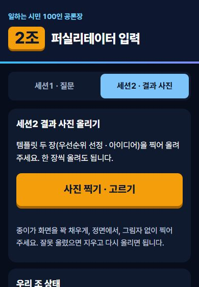
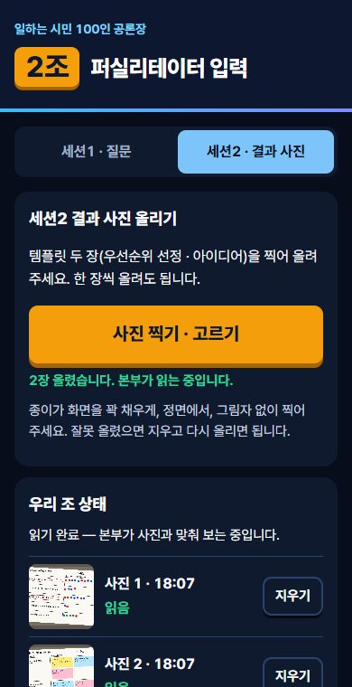

우리 조 화면 열기
맡은 조 번호를 누르면 조 화면이 열립니다. 다른 조 화면은 열지 말아 주세요.
세션1 · 우리 조 질문 보내기
연구 결과 발표 뒤 분임 토의 시간
- 분임에서 도트 스티커로 질문 1개를 고릅니다.
- 단체방에 ○조질문_질문 내용 형식으로 올립니다. 예: 3조질문_청년 일자리 지원은 언제부터 받을 수 있나요?
- 본부가 10개 조 질문을 모아 스크린에 띄웁니다. 비슷한 질문은 묶어서 보여 줍니다.
질문을 고치려면 같은 형식으로 다시 올리면 됩니다. 마지막에 올린 글로 바뀝니다. 단체방이 안 되면 조 화면의 「세션1 · 질문」 탭에 적고 「세션1 질문 제출」을 누릅니다.
세션2 · 결과 사진 올리기
템플릿 두 장(세부과제 우선순위 선정, 정책사업 구체화 아이디어)을 완성한 직후
- 이 페이지 위 우리 조 화면에서 맡은 조를 누르거나 조 QR을 찍어 조 화면을 엽니다. 화면 위에 우리 조 번호가 맞게 나오는지 봅니다.
- 세션2 · 결과 사진 탭을 누릅니다.
- 사진 찍기 · 고르기를 누르고 템플릿을 찍습니다. 두 장을 한 번에 골라도 되고 한 장씩 올려도 됩니다.
- 「2장 올렸습니다」가 나오면 끝입니다. 아래 「우리 조 상태」에서 사진마다 「읽는 중」이 「읽음」으로 바뀝니다(1분 안팎).
- 본부가 사진과 내용을 맞춰 본 뒤 스크린에 띄웁니다. 「본부 확인 완료」가 나오면 발표 준비가 끝난 것입니다.


잘 찍는 법
- 종이 한 장이 화면을 꽉 채우게 찍습니다.
- 위에서 정면으로 찍고 그림자나 조명 반사가 글씨를 가리지 않게 합니다.
- 포스트잇이 떨어지거나 겹쳐서 글씨가 가려지지 않았는지 먼저 봅니다.
안 될 때
| 조 코드가 맞지 않습니다 | 이 페이지 위 「우리 조 화면 열기」에서 맡은 조를 다시 누릅니다. |
|---|---|
| 서버에 연결하지 못했습니다 | 와이파이를 끄고 휴대폰 데이터로 다시 올립니다. |
| 사진을 열지 못했습니다 | 사진첩에서 고르지 말고 카메라로 다시 찍습니다. |
| 그래도 안 될 때 | 단체방에 ○조결과라고 먼저 적고 바로 이어서 사진을 올립니다. |
사전교육 때 아무 종이나 찍어 한 번 올려 보면 당일에 헤매지 않습니다. 연습 사진은 행사 전에 본부가 모두 지웁니다.